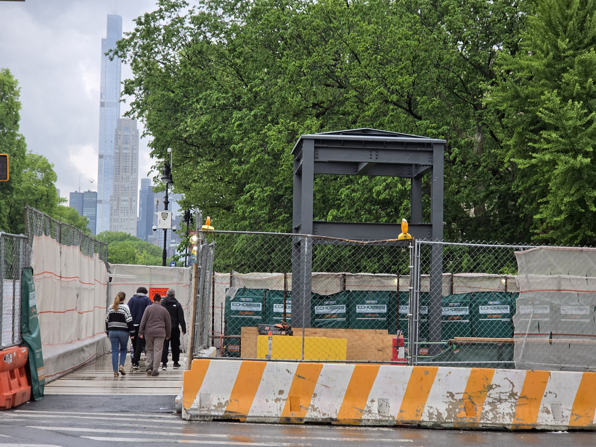
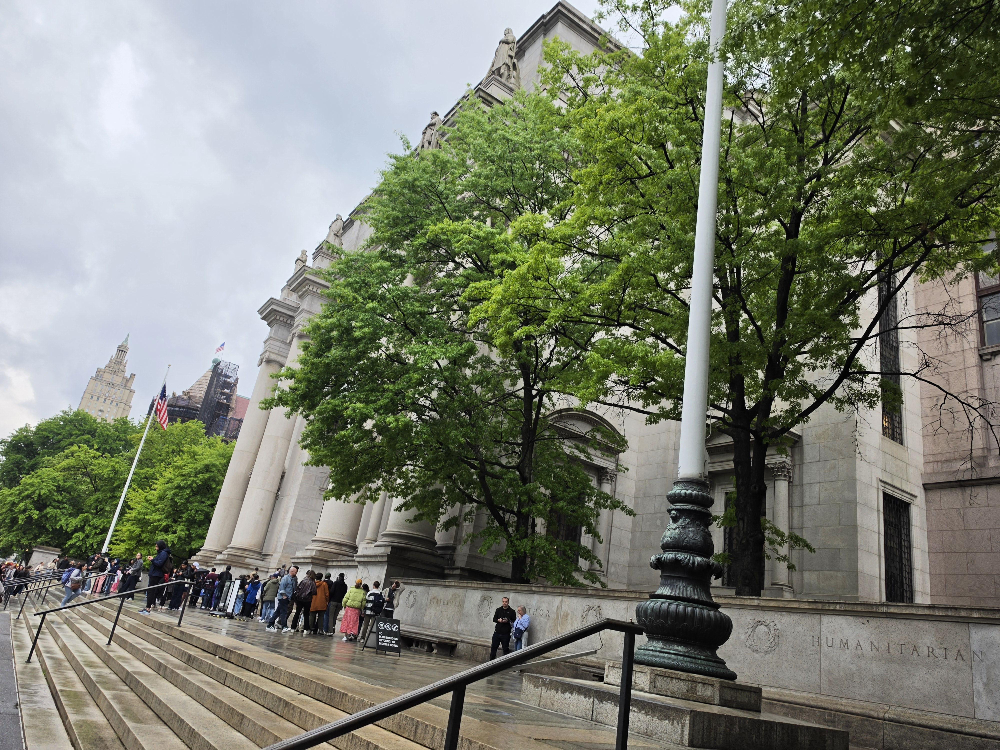

NOTE: While 81st Street is undergoing ADA-Station Improvements, those with ADA-Needs should instead take the bus.

Board a 168th Street bound Train, and get off at the 81st Street subway station.
The Subway and Bus Fare is $3.00. Pay with an OMNY Card or Contactless Payment, or a MetroCard.
MetroCards are also accepted, but can no longer be bought or refilled.
Choose which option to see how to get to Natural History.


Some Tips and Tricks
At Grand Central, there is a set of elevators that will take you up from the mezzanine to the concourse.
It's located between the 46th Street and 47th Street escalator banks on the mezzanine, so look for signs.
There is another elevator available on the Concourse level, that will take you to the Street level.

This elevator is located in a small corner past the ticket at 47th Street, facing away from the 47th Street escalator bank.
Expected Time Taken - Minutes
To get onto street level from the LIRR tracks, it will take you roughly 5 Minutes depending on your speed and method you chose.
To get from the street level to Natural History by Subway, it will take you an additonal 19 Minutes, depending on the time of day.
To get from the street level to Natural History by Bus, it will take you an additonal 30 Minutes, depending on the time of day.
Map Overview
Below is a map showing the route from Grand Central (when you get onto street level) to Natural History.
View A Google Maps Route from Grand Central (47th St and Madison Avenue) to Natural History
Museum of Natural History
